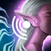
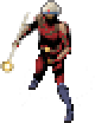
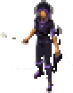
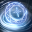
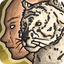
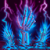

Druida
La naturaleza responde a su voluntad: la piedra le protege, el bosque caza con él y la primavera cura a los suyos.
- Guardián Primordial
 Tanque
Tanque 
Furia del Bosque Daño
Daño- Portador de la Primavera
 Sanador
Sanador
Un MMORPG como los de antes: forma grupo, elige tu papel, entra en la mazmorra y derrota al jefe. Sin tiendas que vendan poder. Solo tú, tu grupo y tu destino.




Cada clase tiene tres especializaciones con su propio recurso, sus propias habilidades y su forma de jugar. Elige la que encaje contigo... o pruébalas todas.
La naturaleza responde a su voluntad: la piedra le protege, el bosque caza con él y la primavera cura a los suyos.
Tanque
Furia del BosqueDañoSanadorDomina el viento y las corrientes: tormentas en área, ráfagas precisas o apoyo al grupo.
 TempestadDaño
TempestadDaño Danza del VendavalDaño
Danza del VendavalDaño
Maestro de las CorrientesApoyoCuerpo y chi en equilibrio: aguanta con hierro, golpea con mil garras o sostiene con su chi.
Tanque
Mil GarrasDañoManipula las almas y el Vacío: devora almas con su esqueleto, contiene el dolor o teje almas para curar.
 Devorador de AlmasDaño
Devorador de AlmasDaño
Vasija del VacíoTanque Tejedor de AlmasSanador
Tejedor de AlmasSanadorDescarga el juego, descomprímelo y ábrelo. Se actualiza solo cada vez que lo abres.
El juego completo para Windows (64 bits). Sin instalador ni programas extra.
En la carpeta que quieras. Abre FieldsOfDestiny.Client.exe.
Desde el propio juego. Elige reino, crea tu personaje y a jugar.
También puedes verlo en GitHub.
Busca grupo, comparte tus hazañas, propón ideas y entérate antes que nadie de las novedades.